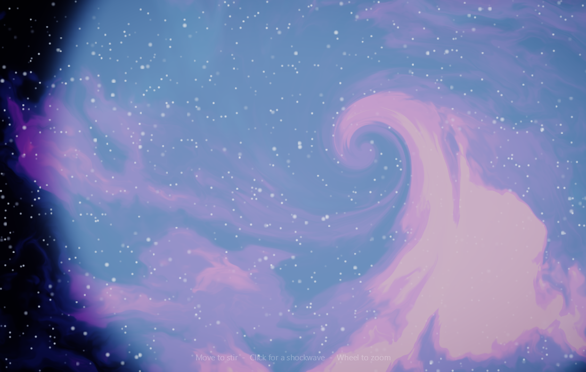

01demoShaderGalaxy
A living deep-space nebula you stir with your mouse, swirling fbm clouds and a twinkling starfield rendered entirely in one SKSL fragment shader.
Controls Mouse move stirs/swirls the nebula toward the cursor (an eased vortex centre); left-click fires an expanding cyan shockwave from the click point; mouse wheel zooms the nebula in and out. A faint bottom-centre hint line states all three.
Full-screen SKSL runtime fragment shader (SKRuntimeEffect.CreateShader)Hand-written value-noise + 6-octave fbm in SKSLTwo-pass domain warping for billowing cloud structureMouse-driven swirl: per-pixel rotation around an eased cursor centreClick shockwave: expanding Gaussian ring perturbing the field